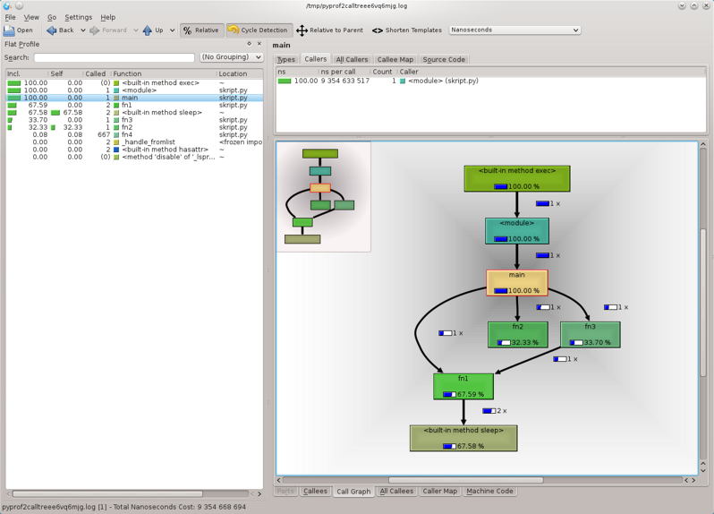

Ladění programu
by Jiří Znamenáček
Úvod
Časem se ve vývoji programu dostanete do stavu, kdy již (skoro) všechno funguje podle představ, dokumentace je napsaná a testy též. Nicméně se zdá, že by program mohl běžet rychleji.
V tu chvíli je třeba se především rozhodnout, zda to pro danou úlohu má vůbec smysl – lovením a upravováním míst, která by mohla vykonávání programu zrychlit, se dá strávit hodně času a ne vždy bude výsledek odpovídat vynaložené námaze. Pokud to však smysl má (např. program běží opakovaně a často), nastupuje ladění programu.
Profilování běhu programu pomocí „cProfile“
Přesný postup ladění/profilování se bude asi případ od případu lišit, ale obecně se dá říci, že pokud se dostanete do stavu, kdy vás tohle zajímá, asi použijete knihovní modul cProfile.
Ten se dá buď „naroubovat“ přímo na podezřelou část kódu nebo ho můžete – podstatně snáze neboť bez jakékoliv úpravy testovaného kódu – pustit na celý skript přinejmenším dvěma následujícími způsoby:
# s výstupem na obrazovku
python -m cProfile skript.py
# s výstupem do souboru
python -m cProfile -o profile.log skript.py
Testovací skript
Vyrobme nějaký jednoduchý, ale zjevně neoptimální testovací skript, například:
„cProfile“ – výstup na obrazovku I
A podívejme se mu na zoubek:
python -m cProfile skript.py
„cProfile“ – výstup na obrazovku II
Význam textů a sloupečků je poměrně průhledný:
- hlavička udává, kolik funkcí bylo během vykonávání programu zavoláno, kolik z nich (číslo v závorce) nezpůsobila rekurze a jak dlouho celý běh (nicméně ovlivněný profilerem) trval;
- další řádka indikuje, podle jakého kritéria jsou seřazeny vypsané údaje;
-
přičemž tyto údaje se skládají z:
- ncalls – počet volání funkce;
- tottime – celkový čas strávený ve funkci, ale BEZ času v podfunkcích;
-
percall – podíl předchozích dvou údajů, tedy
tottime / ncalls; - cumtime – celkový čas strávený ve funkci VČETNĚ jejích podfunkcí (odpovídá realitě i pro rekurzivní volání);
- percall – předchozí údaj dělený počtem nerekurzivních zavolání funkce;
- filename:lineno(function) – informace o volané funkci;
PS: Pokud bychom v kódu neměli žádná rekurzivní volání, část v závorce v hlavičce bude chybět a sloupeček ncalls nebude obsahovat údaj s lomítkem.
„cProfile“ – výstup na obrazovku III
Zjevně si tedy můžeme výstup seřadit k obrazu svému, zde podle sloupce cumtime:
python -m cProfile -s cumtime skript.py
„cProfile“ – výstup do souboru
Nicmémě v plném výstupu, který získáme uložením reportu do souboru..
python -m cProfile -o profile.log skript.py
..se toho schovává mnohem víc. Ovšem nyní již v binární podobě, takže takto získaná data profilace musíme zpracovat jiným způsobem.
Modul „pstats“
Ke zpracování binárního záznamu ladění programu existuje hromada externích – a dokonce i vizuálních – nástrojů, nicméně v pythoní knihovně je přítomen pouze ten nejjednodušší (ale i tak dosti užitečný) řádkově orientovaný modul pstats.
V základním použití z příkazové řádky..
python -m pstats profile.log
..se chová jako řádkově orientovaný „mini-browser“ po statistice ladění (má dokonce i nápovědu dostupnou pod příkazem help), ale dá se použít i z programu (ostatně stejně jako cProfile).
„pstats“ – ukázka
Příklad s načtením dat až uvnitř „minibrowseru“:
python -m pstats
Poznámky
Kdybyste se chtěli „povrtat“ v implementaci profileru, je k dispozici i čistě pythoní modul profile, ale jeho režije přidaná k testovanému programu je výrazně vyšší než odpovídající céčkovský cProfile.
Kromě těchto tří knihovních nástrojů můžete samozřejmě používat armádu externích modulů, z nichž některé vám vyrobí i krásné obrázky nebo spočítají, kde vám „utíká“ paměť (aka memory leak). Příkladem budiž třebas známý KCachegrind (data pro něj musíte nejdříve zkonvertovat, např. pomocí pyprof2calltree):
